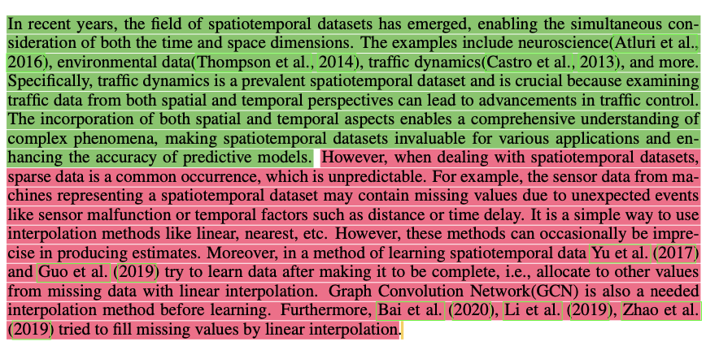
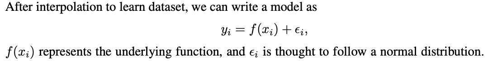
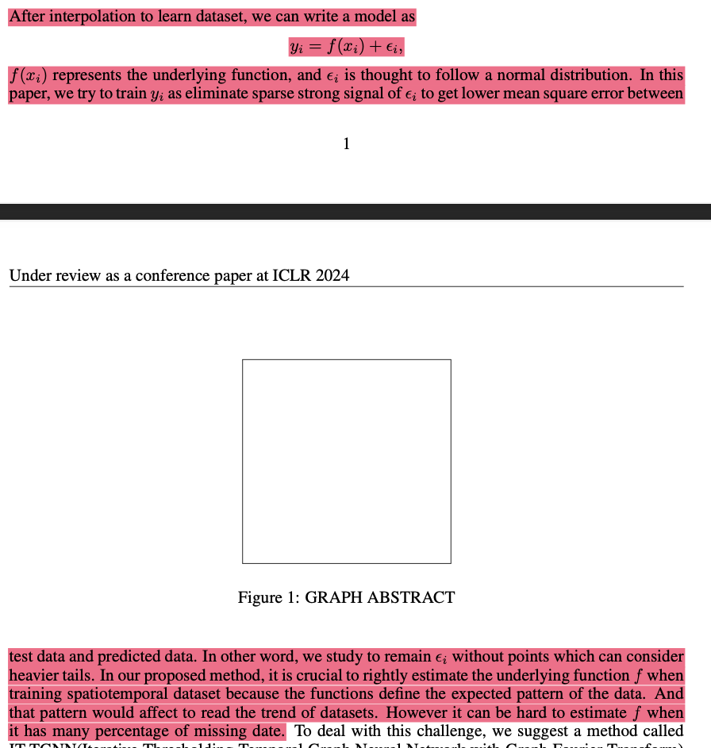
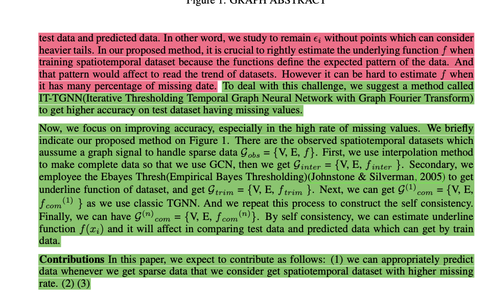
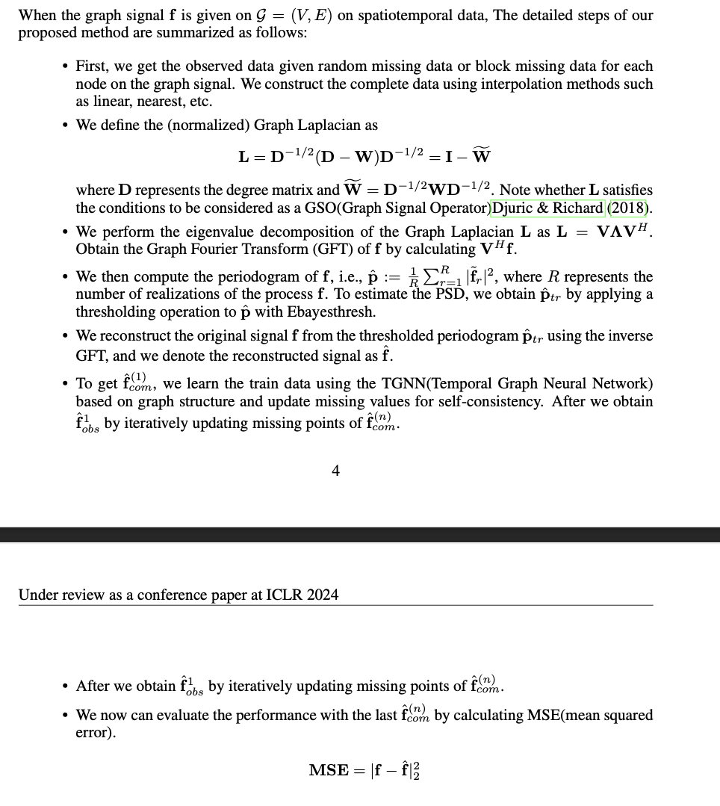

[IT-STGCN] 논문리비전
1. intro

- 초록색은 나쁘지 않음. 하지만 아래의 내용을 보완하는게 좋음.
- 분야의 예시로 신경과학, 환경데이터, 교통자료가 있는데 우리가 실제로 분석한 자료들이 사용된 논문을 찾아보며 예시를 들것 (Chickenpox, …) 사용하지 않더라도 예시를 들것.
- 이러한 자료를 분석하는것이 왜 어려운지 설명할 것. 즉 단순히 시계열로 해석하거나 공간자료로 해석하면 어떠한 문제가 있는지 간단히 서술할 것. (1~2문장) 레퍼런스 찾을것. (torch_geometric_temporal 의 도입부분 활용)
- 붉은부분
- 의도는 좋으나
sparse data는 올바르지 않은 표현임. missing, irregulary observed data 등으로 설명할 것. - 이러한 자료가 왜 발생하는지 설명할 것. (이부분은 레퍼런스 필요) 이러한 자료를 처리하는 것이 어려운 이유를 설명할 것.1
- 우리의 아이디어는 “호모지니우스하지 않은 그래프 -> 호모지니우스화 시킴” 인데 이러한 방식은 이상한방식이 아님. Yu et al. (2017) and Guo et al. (2019) Bai et al. (2020), Li et al. (2019), Zhao et al. (2019) 이 우리와 비슷한 연구를 했음.
1 보통 결측없이 모두 관측한상태에서는 모형이 잘 동작함, 대부분의 spatio temporal data는 각각의 스냅샷마다 동일한 그래프구조를 가진다는 가정을 사용함. 스냅샷마다 그래프구조가 다른 경우를 가정하는 모형도 있음. 그러한 모형의 예시는 A,B,C,…. 등이 있음. 하지만 이러한 연구는 애초에 데이터가 스냅샷마다 non-호모지니우스하게 생겼으면 효율적일 수 있으나, 실제true model은 스냅샷마다 그래프구조가 동일하다고 여겨지지만 결측치로 인하여 스냅샷마다 호모지니우스가 깨지는 경우는 효율적이지 않을 수 있음. 우리는 이 부분에 초점을 맞추었음. 우리의 아이디어는 호모지니우스 하지 않은 그래프를 A,B,C, 등을 이용하여 그대로 처리하는것 보다 missing을 처리하여 호모지니우스하게 강제로 만들고 그 자료를 분석하자는 아이디어임.
- 아래식은 틀렸음. 이건 회귀모형이 아님.. GNAR의 notation을 사용하여 모형을 다시표현해볼것..

- 이부분이 아주 클리어 해야함
- 사용하는 대부분의 Notations들이 정리되어야함.
- intro에 쓰는 것이 부담스러우면 제외해도 무방
- 뒤에 self consistence estimator에 사용할 Notation을 함께 고려
- 빨간부분 삭제후 다시 작성 (혹은 공부할 것)

- 초록색부분은 나쁘지 않음

3. Backgrounds
- 좋아요
- 자잘한건 제가 수정하면 될 듯합니다.
4.
- 내용을 좀 더 팬시하게 쓸 필요가 있어보임
- 아래부분을 정리하여 알고리즘화 해야함.

5. Experiments
- 아직 덜 읽어봄
- 데이터 설명은 Appendix에, 실험결과와 Fig는 본문에 있는게 좋음